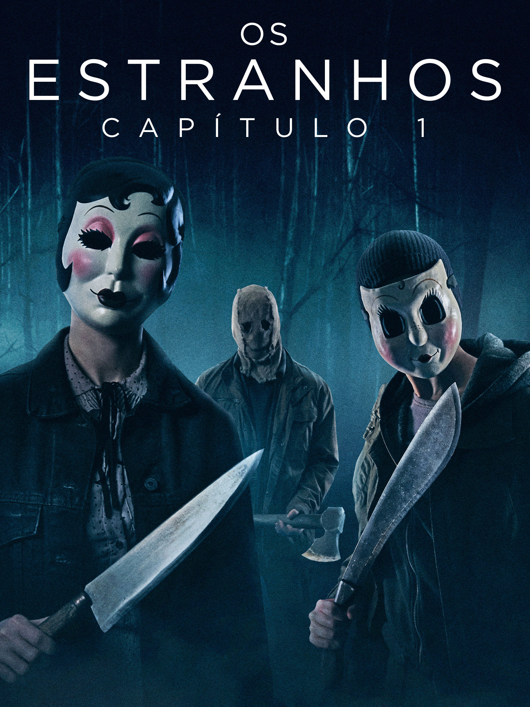

FILM MIX
Início
Filmes
Séries
Lançamento
Buscar
Seu navegador não suporta o vídeo. Por favor, atualize para assistir ao filme.

IMDB: 7,0 / 10
Assistir Estranhos: Capítulo 1 Online
Lançamento:
16 de Maio de 2024
Gênero: Terror / Suspense
Ação
Crime
Sinopse